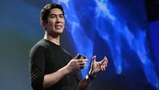
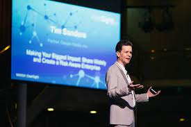

History
TechCon began in 2000 as a small gathering of technology enthusiasts. Over the years, it has grown into a major conference attracting thousands of attendees from around the world. TechCon has always aimed to bring together the brightest minds in technology to share knowledge and inspire innovation.
Mission
Our mission is to foster innovation and collaboration in the tech community. TechCon provides a platform for industry leaders, developers, and enthusiasts to come together, share insights, and shape the future of technology. We are committed to supporting diversity and inclusion in tech, and ensuring that everyone has access to the tools and knowledge they need to succeed.
Past Speakers
Dr. John Smith

Dr. John Smith is a leading expert in artificial intelligence and has been a keynote speaker at TechCon for the past five years. Her groundbreaking work in AI has paved the way for numerous advancements in the field.
John Doe

John Doe, CEO of Tech Innovations Inc., has been a regular speaker at TechCon. His insights into tech startups and entrepreneurship have inspired many to pursue their own ventures.
Emily Johnson
Emily Johnson, a pioneer in cybersecurity, has contributed greatly to TechCon's focus on security in the digital age. Her talks are always a highlight of the conference.